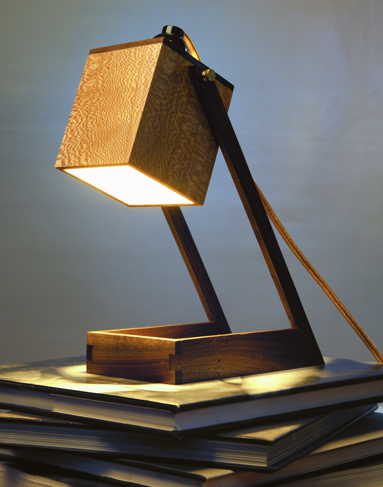
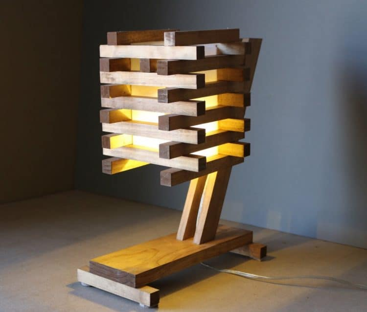

Posted on November 17th 2017 1:11pm
Here are some pictures of me working on my Desk Lamp Project and a picture of my progress so far. From this project, I learnt how to use three of the saws to cut wood and the two types of sanding machinese.
These are some desk lamps that I got inspirations from. I got my main structure from this lamp. However, I decided to change the base to more calming and satisfying using two types of wood which are poplar and mahogony. In terms of material, I am using wood mainly and clay as my second material in the head section in small pieces or strips.
 I have encountered many challenges mainly because I had almost no woodworking and metal experience even though I had some soldering experience. It took me a while to get used the machines. One thing I learnt was that there are different types of sanding machines, one for breaking down and one for only sanding. The main difference between the two is the direction the sander moves. The typical sanding one will only move in up and down or left and right. On the other hand, the one to break some wood down can rotate and it is able to go in ay direction. It also uses a different type of sanding paper.